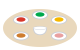
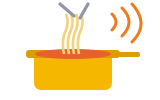
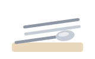
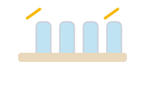
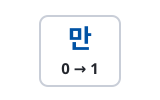

01만남mannam · Meeting people인사insa
한국 사람들은 인사할 때, 고마울 때, 미안할 때 고개를 숙여요.hanguk saramdeureun insahal ttae, gomaul ttae, mianhal ttae gogaereul sugyeoyo.
Koreans bow their heads to say hello, thank you and sorry.
Talking about Korean culture · 13 things Koreans do, ready for an interview
Most of these customs come from two ideas: respect for older people, and 'we' before 'me'.

나눠 먹기nanweo meokgiFood is shared, not splitOne evening with Korean coworkers: meet, eat, pay, talk, then sing.
Lyric: Korean in English letters, so you can read it out loud. eo sounds like the u in up, eu like the oo in good, ae like the e in bed.
Space listen · ← → move · K show text
한국 사람들은 인사할 때, 고마울 때, 미안할 때 고개를 숙여요.hanguk saramdeureun insahal ttae, gomaul ttae, mianhal ttae gogaereul sugyeoyo.
Koreans bow their heads to say hello, thank you and sorry.
회사에서는 이름 대신 '팀장님', '부장님'처럼 직급으로 불러요.hwesaeseoneun ireum daeshin 'timjangnim', 'bujangnim'cheoreom jikgeubeuro bulleoyo.
At work, people are called by their title, like team leader or department head, not by name.
윗사람에게 물건을 줄 때는 두 손으로 드려요.witsaramege mulgeoneul jul ttaeneun du soneuro deuryeoyo.
You give things to an older person with two hands.
식당에서는 반찬을 다 같이 나눠 먹어요.shikdangeseoneun banchaneul da gachi nanweo meogeoyo.
At a restaurant, everyone shares the side dishes.
김치찌개도 한 냄비에서 같이 떠먹어요.gimchijjigaedo han naembieseo gachi tteomeogeoyo.
Even kimchi stew is eaten together from one pot.
한국 사람들은 밥을 빨리 먹는 편이에요.hanguk saramdeureun babeul ppalli meongneun pyeonieyo.
Koreans tend to eat fast.

라면을 후루룩 소리 내서 먹어도 괜찮아요.ramyeoneul hururuk sori naeseo meogeodo gwaenchanayo.
It's fine to slurp your ramyeon out loud.

한국에서는 나무젓가락보다 쇠젓가락을 많이 써요.hangugeseoneun namujeotgarakboda swejeotgarageul mani sseoyo.
In Korea, people use metal chopsticks more than wooden ones.
'오늘은 제가 살게요. 다음에 사 주세요.' 이렇게 돌아가면서 사요.'oneureun jega salgeyo. daeume sa juseyo.' ireoke doragamyeonseo sayo.
'I'll pay today. You get it next time.' People take turns paying.
'내 엄마' 대신 '우리 엄마', '우리 회사'라고 말해요.'nae eomma' daeshin 'uri eomma', 'uri hwesa'rago malhaeyo.
People say 'our mom' and 'our company' instead of 'my'.
한국 나이로는 태어나면 한 살이고, 1월 1일에 모두 한 살을 더 먹어요.hanguk naironeun taeeonamyeon han sarigo, irweol irire modu han sareul deo meogeoyo.
In Korean age you are one at birth, and everyone turns a year older on January 1.
가족이 아니어도 나이가 많은 친구를 '언니', '오빠', '누나', '형'이라고 불러요.gajogi anieodo naiga maneun chingureul 'eonni', 'oppa', 'nuna', 'hyeong'irago bulleoyo.
Even outside the family, older friends are called 언니, 오빠, 누나 or 형.Even outside the family, older friends are called eonni, oppa, nuna or hyeong.
밥을 먹고 나서 같이 노래방에 자주 가요.babeul meokgo naseo gachi noraebange jaju gayo.
After eating, people often go to a karaoke room together.
The three things learners mix up most.
면접에서 '-요'로 말해도 돼요?myeonjeobeseo '-yo'ro malhaedo dwaeyo?
Can I end sentences with -요 in an interview?Can I end sentences with -yo in an interview?
네, 괜찮아요. 더 격식 있게 하려면 '-습니다'로 바꾸면 돼요.ne, gwaenchanayo. deo gyeokshik itge haryeomyeon '-seumnida'ro bakkumyeon dwaeyo.
Yes, that's fine. To sound more formal, switch to -습니다.Yes, that's fine. To sound more formal, switch to -seumnida.
신기했어요 becomes 신기했습니다, 써요 becomes 씁니다. Pick one style and keep it.shingihaesseoyo becomes shingihaetseumnida, sseoyo becomes sseumnida. Pick one style and keep it.
'우리 엄마'는 누구 엄마예요?'uri eomma'neun nugu eommayeyo?
Whose mom is 'our mom'?
제 엄마예요. 듣는 사람 엄마가 아니에요.je eommayeyo. deunneun saram eommaga anieyo.
It's my own mom, not the listener's mom.
우리 sounds warmer than 내. Use 우리 회사 for your own company too.uri sounds warmer than nae. Use uri hwesa for your own company too.
'오빠'는 남자 친구한테만 써요?'oppa'neun namja chinguhanteman sseoyo?
Is 오빠 only for a boyfriend?Is oppa only for a boyfriend?
아니요. 여자가 나이 많은 친한 남자를 부를 때 써요.aniyo. yeojaga nai maneun chinhan namjareul bureul ttae sseoyo.
No. A woman uses it for any older man she is close to.
A man says 형 to an older man and 누나 to an older woman. A woman says 오빠 and 언니.A man says hyeong to an older man and nuna to an older woman. A woman says oppa and eonni.
Answer in your head, then tap Listen to compare.
한국에 와서 어떤 문화가 제일 신기했어요?hanguge waseo eotteon munhwaga jeil shingihaesseoyo?
What Korean custom surprised you the most?
밥을 정말 빨리 먹는 게 신기했어요. 처음에는 따라가기 힘들었는데 지금은 익숙해요.babeul jeongmal ppalli meongneun ge shingihaesseoyo. cheoeumeneun ttaragagi himdeureonneunde jigeumeun iksukaeyo.확인 필요 · checkcheck
How fast people eat surprised me. At first it was hard to keep up, but now I'm used to it.
한국 회사에서는 사람을 어떻게 불러요?hanguk hwesaeseoneun sarameul eotteoke bulleoyo?
How do you address people at a Korean company?
이름 대신 직급에 '님'을 붙여서 불러요. 예를 들면 '팀장님'이라고 해요.ireum daeshin jikgeube 'nim'eul butyeoseo bulleoyo. yereul deulmyeon 'timjangnim'irago haeyo.
Instead of names, you add 님 to the title. For example, you say 팀장님.Instead of names, you add nim to the title. For example, you say timjangnim.
윗사람에게 물건을 드릴 때 어떻게 해요?witsaramege mulgeoneul deuril ttae eotteoke haeyo?
How do you hand something to an older person?
두 손으로 드리고 고개를 살짝 숙여요.du soneuro deurigo gogaereul saljjak sugyeoyo.
I give it with two hands and bow my head a little.
왜 '내 회사'가 아니라 '우리 회사'라고 해요?wae 'nae hwesa'ga anira 'uri hwesa'rago haeyo?
Why do people say 'our company', not 'my company'?
한국은 '나'보다 '우리'를 중요하게 생각해서 그래요. 더 친근하게 들려요.hangugeun 'na'boda 'uri'reul jungyohage saenggakaeseo geuraeyo. deo chingeunhage deullyeoyo.
Because Korea puts 'we' before 'me'. It sounds friendlier.
한국 나이를 알아요?hanguk naireul arayo?
Do you know about Korean age?
네, 태어나면 한 살이고 1월 1일에 한 살씩 더 먹어요. 그런데 2023년부터는 만 나이를 써요.ne, taeeonamyeon han sarigo irweol irire han salsshik deo meogeoyo. geureonde icheonishipsamnyeonbuteoneun man naireul sseoyo.
Yes. You are one at birth and gain a year every January 1. But since 2023, international age is used.
보통 회식 끝나고 뭐 해요?botong hweshik kkeunnago mweo haeyo?
What do people usually do after a team dinner?
노래방에 가서 같이 노래를 불러요. 코인 노래방은 싸서 자주 가요.noraebange gaseo gachi noraereul bulleoyo. koin noraebangeun ssaseo jaju gayo.
They go to a karaoke room and sing together. Coin karaoke is cheap, so people go often.
밥값은 누가 내요?bapgapseun nuga naeyo?
Who pays for the meal?
나눠서 낼 때도 있고, '오늘은 제가 살게요' 하고 돌아가면서 낼 때도 있어요.nanweoseo nael ttaedo itgo, 'oneureun jega salgeyo' hago doragamyeonseo nael ttaedo isseoyo.
Sometimes we split it, and sometimes someone says 'I'll pay today' and we take turns.
캄보디아에도 비슷한 문화가 있어요?kambodiaedo biseutan munhwaga isseoyo?
Is there a similar custom in Cambodia?
네, 있어요. 캄보디아에서도 나이 많은 사람을 '벙'이라고 불러요. 한국의 '언니, 오빠'하고 비슷해요.ne, isseoyo. kambodiaeseodo nai maneun sarameul 'beong'irago bulleoyo. hanguge 'eonni, oppa'hago biseutaeyo.확인 필요 · checkcheck
Yes. In Cambodia we also call older people 'bong'. It's like 언니 and 오빠 in Korea.Yes. In Cambodia we also call older people 'bong'. It's like eonni and oppa in Korea.
한국 문화하고 캄보디아 문화는 뭐가 달라요?hanguk munhwahago kambodia munhwaneun mweoga dallayo?
How is Korean culture different from Cambodian culture?
한국은 뭐든지 빨라요. 캄보디아는 조금 더 여유가 있어요.hangugeun mweodeunji ppallayo. kambodianeun jogeum deo yeoyuga isseoyo.확인 필요 · checkcheck
Everything in Korea is fast. Cambodia is a bit more relaxed.
Add one of these to any answer and keep talking.
Tap a word's play button to hear it. Hide one side, then recall it before you tap to check.
선배를 보면 고개를 숙여서 인사해요.seonbaereul bomyeon gogaereul sugyeoseo insahaeyo.
When I see a senior, I bow my head to greet them.
회사에서는 직급으로 불러요.hwesaeseoneun jikgeubeuro bulleoyo.
At work, people are called by their title.
팀장님, 회의 자료 드릴게요.timjangnim, hwei jaryo deurilgeyo.
Team leader, here are the meeting files.
윗사람에게는 존댓말을 써요.witsaramegeneun jondaenmareul sseoyo.
You use polite speech with seniors.
명함은 두 손으로 받아요.myeonghameun du soneuro badayo.
You take a business card with two hands.
처음 만난 사람에게는 존댓말을 써요.cheoeum mannan saramegeneun jondaenmareul sseoyo.
You use polite speech with people you just met.
반찬은 더 달라고 하면 공짜로 줘요.banchaneun deo dallago hamyeon gongjjaro jweoyo.
If you ask for more side dishes, they are free.
피자를 시켜서 동료들이랑 나눠 먹었어요.pijareul shikyeoseo dongnyodeurirang nanweo meogeosseoyo.
I ordered pizza and shared it with my coworkers.
점심에 김치찌개를 먹었어요.jeomshime gimchijjigaereul meogeosseoyo.
I had kimchi stew for lunch.
한국은 빨리빨리 문화가 있어요.hangugeun ppallippalli munhwaga isseoyo.
Korea has a hurry-hurry culture.
라면을 후루룩 먹었어요.ramyeoneul hururuk meogeosseoyo.
I slurped down my ramyeon.
쇠젓가락은 처음에 좀 어려웠어요.swejeotgarageun cheoeume jom eoryeoweosseoyo.
Metal chopsticks were a bit hard at first.
제가 계산할게요.jega gyesanhalgeyo.
I'll get the bill.
오늘 점심은 제가 살게요.oneul jeomshimeun jega salgeyo.
Lunch is on me today.
커피는 돌아가면서 사요.keopineun doragamyeonseo sayo.
We take turns buying coffee.

금요일에 팀 회식이 있어요.geumyoire tim hweshigi isseoyo.
There's a team dinner on Friday.
우리 회사는 강남에 있어요.uri hwesaneun gangname isseoyo.
My (our) company is in Gangnam.
새해가 돼서 한 살 더 먹었어요.saehaega dwaeseo han sal deo meogeosseoyo.
It's the new year, so I'm a year older.

요즘은 공식적으로 만 나이를 써요.yojeumeun gongshikjeogeuro man naireul sseoyo.
These days international age is the official one.
언니, 같이 점심 먹어요.eonni, gachi jeomshim meogeoyo.
Unnie, let's have lunch together.
형, 오늘 시간 있어요?hyeong, oneul shigan isseoyo?
Hyung, are you free today?
노래방 갈래요?noraebang gallaeyo?
Shall we go to a karaoke room?
코인 노래방은 혼자 가도 괜찮아요.koin noraebangeun honja gado gwaenchanayo.
It is fine to go to coin karaoke alone.
처음에는 모든 게 신기했어요.cheoeumeneun modeun ge shingihaesseoyo.
At first everything amazed me.
이제 한국 생활에 익숙해요.ije hanguk saenghware iksukaeyo.
Now I'm used to life in Korea.
Lyric: Korean in English letters, so you can read it out loud. eo sounds like the u in up, eu like the oo in good, ae like the e in bed.
한국 사람들은 인사할 때, 고마울 때, 미안할 때 고개를 숙여요. 회사에서는 이름 대신 '팀장님', '부장님'처럼 직급으로 불러요. 윗사람에게 물건을 줄 때는 두 손으로 드려요.hanguk saramdeureun insahal ttae, gomaul ttae, mianhal ttae gogaereul sugyeoyo. hwesaeseoneun ireum daeshin 'timjangnim', 'bujangnim'cheoreom jikgeubeuro bulleoyo. witsaramege mulgeoneul jul ttaeneun du soneuro deuryeoyo.
Koreans bow their heads to say hello, thank you and sorry. At work, people are called by their title, like team leader or department head, not by name. You give things to an older person with two hands.
식당에서는 반찬을 다 같이 나눠 먹어요. 김치찌개도 한 냄비에서 같이 떠먹어요. 한국 사람들은 밥을 빨리 먹는 편이에요. 라면을 후루룩 소리 내서 먹어도 괜찮아요. 한국에서는 나무젓가락보다 쇠젓가락을 많이 써요.shikdangeseoneun banchaneul da gachi nanweo meogeoyo. gimchijjigaedo han naembieseo gachi tteomeogeoyo. hanguk saramdeureun babeul ppalli meongneun pyeonieyo. ramyeoneul hururuk sori naeseo meogeodo gwaenchanayo. hangugeseoneun namujeotgarakboda swejeotgarageul mani sseoyo.
At a restaurant, everyone shares the side dishes. Even kimchi stew is eaten together from one pot. Koreans tend to eat fast. It's fine to slurp your ramyeon out loud. In Korea, people use metal chopsticks more than wooden ones.
'오늘은 제가 살게요. 다음에 사 주세요.' 이렇게 돌아가면서 사요.'oneureun jega salgeyo. daeume sa juseyo.' ireoke doragamyeonseo sayo.
'I'll pay today. You get it next time.' People take turns paying.
'내 엄마' 대신 '우리 엄마', '우리 회사'라고 말해요. 한국 나이로는 태어나면 한 살이고, 1월 1일에 모두 한 살을 더 먹어요. 가족이 아니어도 나이가 많은 친구를 '언니', '오빠', '누나', '형'이라고 불러요.'nae eomma' daeshin 'uri eomma', 'uri hwesa'rago malhaeyo. hanguk naironeun taeeonamyeon han sarigo, irweol irire modu han sareul deo meogeoyo. gajogi anieodo naiga maneun chingureul 'eonni', 'oppa', 'nuna', 'hyeong'irago bulleoyo.
People say 'our mom' and 'our company' instead of 'my'. In Korean age you are one at birth, and everyone turns a year older on January 1. Even outside the family, older friends are called 언니, 오빠, 누나 or 형.People say 'our mom' and 'our company' instead of 'my'. In Korean age you are one at birth, and everyone turns a year older on January 1. Even outside the family, older friends are called eonni, oppa, nuna or hyeong.
밥을 먹고 나서 같이 노래방에 자주 가요.babeul meokgo naseo gachi noraebange jaju gayo.
After eating, people often go to a karaoke room together.
Q. 면접에서 '-요'로 말해도 돼요?myeonjeobeseo '-yo'ro malhaedo dwaeyo?
Q. Can I end sentences with -요 in an interview?Can I end sentences with -yo in an interview?
A. 네, 괜찮아요. 더 격식 있게 하려면 '-습니다'로 바꾸면 돼요.ne, gwaenchanayo. deo gyeokshik itge haryeomyeon '-seumnida'ro bakkumyeon dwaeyo.
A. Yes, that's fine. To sound more formal, switch to -습니다.Yes, that's fine. To sound more formal, switch to -seumnida.
Q. '우리 엄마'는 누구 엄마예요?'uri eomma'neun nugu eommayeyo?
Q. Whose mom is 'our mom'?
A. 제 엄마예요. 듣는 사람 엄마가 아니에요.je eommayeyo. deunneun saram eommaga anieyo.
A. It's my own mom, not the listener's mom.
Q. '오빠'는 남자 친구한테만 써요?'oppa'neun namja chinguhanteman sseoyo?
Q. Is 오빠 only for a boyfriend?Is oppa only for a boyfriend?
A. 아니요. 여자가 나이 많은 친한 남자를 부를 때 써요.aniyo. yeojaga nai maneun chinhan namjareul bureul ttae sseoyo.
A. No. A woman uses it for any older man she is close to.
Q. 한국에 와서 어떤 문화가 제일 신기했어요?hanguge waseo eotteon munhwaga jeil shingihaesseoyo?
Q. What Korean custom surprised you the most?
A. 밥을 정말 빨리 먹는 게 신기했어요. 처음에는 따라가기 힘들었는데 지금은 익숙해요.babeul jeongmal ppalli meongneun ge shingihaesseoyo. cheoeumeneun ttaragagi himdeureonneunde jigeumeun iksukaeyo.
A. How fast people eat surprised me. At first it was hard to keep up, but now I'm used to it.
Q. 한국 회사에서는 사람을 어떻게 불러요?hanguk hwesaeseoneun sarameul eotteoke bulleoyo?
Q. How do you address people at a Korean company?
A. 이름 대신 직급에 '님'을 붙여서 불러요. 예를 들면 '팀장님'이라고 해요.ireum daeshin jikgeube 'nim'eul butyeoseo bulleoyo. yereul deulmyeon 'timjangnim'irago haeyo.
A. Instead of names, you add 님 to the title. For example, you say 팀장님.Instead of names, you add nim to the title. For example, you say timjangnim.
Q. 윗사람에게 물건을 드릴 때 어떻게 해요?witsaramege mulgeoneul deuril ttae eotteoke haeyo?
Q. How do you hand something to an older person?
A. 두 손으로 드리고 고개를 살짝 숙여요.du soneuro deurigo gogaereul saljjak sugyeoyo.
A. I give it with two hands and bow my head a little.
Q. 왜 '내 회사'가 아니라 '우리 회사'라고 해요?wae 'nae hwesa'ga anira 'uri hwesa'rago haeyo?
Q. Why do people say 'our company', not 'my company'?
A. 한국은 '나'보다 '우리'를 중요하게 생각해서 그래요. 더 친근하게 들려요.hangugeun 'na'boda 'uri'reul jungyohage saenggakaeseo geuraeyo. deo chingeunhage deullyeoyo.
A. Because Korea puts 'we' before 'me'. It sounds friendlier.
Q. 한국 나이를 알아요?hanguk naireul arayo?
Q. Do you know about Korean age?
A. 네, 태어나면 한 살이고 1월 1일에 한 살씩 더 먹어요. 그런데 2023년부터는 만 나이를 써요.ne, taeeonamyeon han sarigo irweol irire han salsshik deo meogeoyo. geureonde icheonishipsamnyeonbuteoneun man naireul sseoyo.
A. Yes. You are one at birth and gain a year every January 1. But since 2023, international age is used.
Q. 보통 회식 끝나고 뭐 해요?botong hweshik kkeunnago mweo haeyo?
Q. What do people usually do after a team dinner?
A. 노래방에 가서 같이 노래를 불러요. 코인 노래방은 싸서 자주 가요.noraebange gaseo gachi noraereul bulleoyo. koin noraebangeun ssaseo jaju gayo.
A. They go to a karaoke room and sing together. Coin karaoke is cheap, so people go often.
Q. 밥값은 누가 내요?bapgapseun nuga naeyo?
Q. Who pays for the meal?
A. 나눠서 낼 때도 있고, '오늘은 제가 살게요' 하고 돌아가면서 낼 때도 있어요.nanweoseo nael ttaedo itgo, 'oneureun jega salgeyo' hago doragamyeonseo nael ttaedo isseoyo.
A. Sometimes we split it, and sometimes someone says 'I'll pay today' and we take turns.
Q. 캄보디아에도 비슷한 문화가 있어요?kambodiaedo biseutan munhwaga isseoyo?
Q. Is there a similar custom in Cambodia?
A. 네, 있어요. 캄보디아에서도 나이 많은 사람을 '벙'이라고 불러요. 한국의 '언니, 오빠'하고 비슷해요.ne, isseoyo. kambodiaeseodo nai maneun sarameul 'beong'irago bulleoyo. hanguge 'eonni, oppa'hago biseutaeyo.
A. Yes. In Cambodia we also call older people 'bong'. It's like 언니 and 오빠 in Korea.Yes. In Cambodia we also call older people 'bong'. It's like eonni and oppa in Korea.
Q. 한국 문화하고 캄보디아 문화는 뭐가 달라요?hanguk munhwahago kambodia munhwaneun mweoga dallayo?
Q. How is Korean culture different from Cambodian culture?
A. 한국은 뭐든지 빨라요. 캄보디아는 조금 더 여유가 있어요.hangugeun mweodeunji ppallayo. kambodianeun jogeum deo yeoyuga isseoyo.
A. Everything in Korea is fast. Cambodia is a bit more relaxed.
처음에는 신기했는데 지금은 익숙해요.cheoeumeneun shingihaenneunde jigeumeun iksukaeyo.
At first it surprised me, but now I'm used to it.
그건 캄보디아하고 비슷해요.geugeon kambodiahago biseutaeyo.
That's similar to Cambodia.
캄보디아는 조금 달라요.kambodianeun jogeum dallayo.
Cambodia is a little different.
잘은 모르지만, 제 생각에는 존중하는 문화 같아요.jareun moreujiman, je saenggageneun jonjunghaneun munhwa gatayo.
I'm not sure, but I think it's a culture of respect.
Say it in your head first, then tap the box to check.